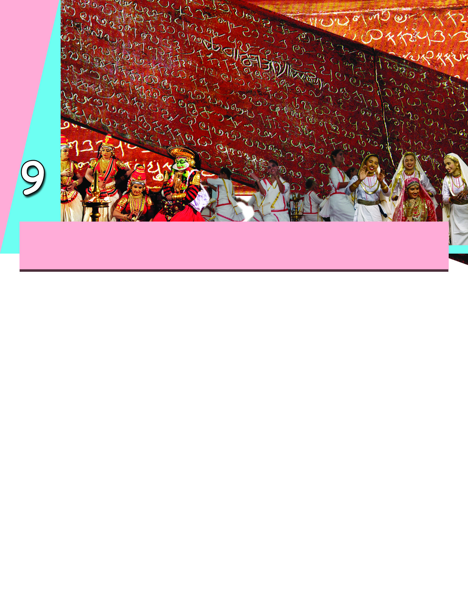
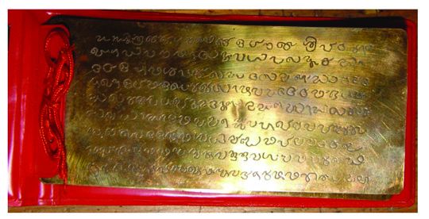
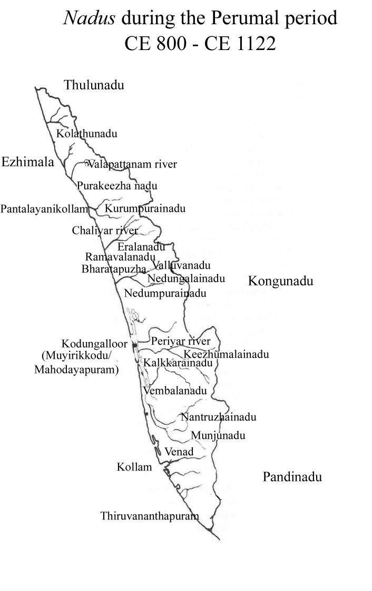
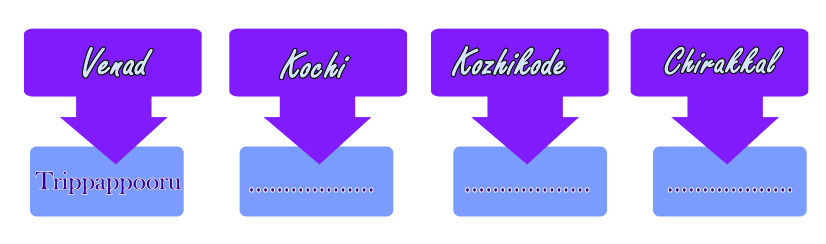
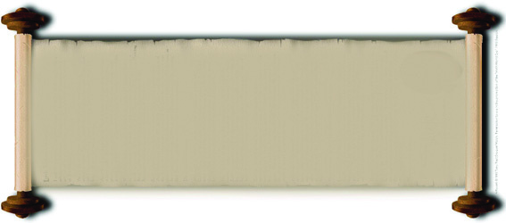
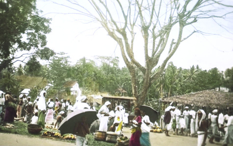
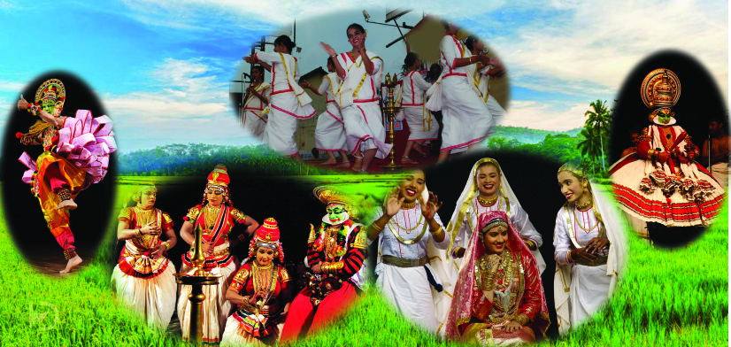
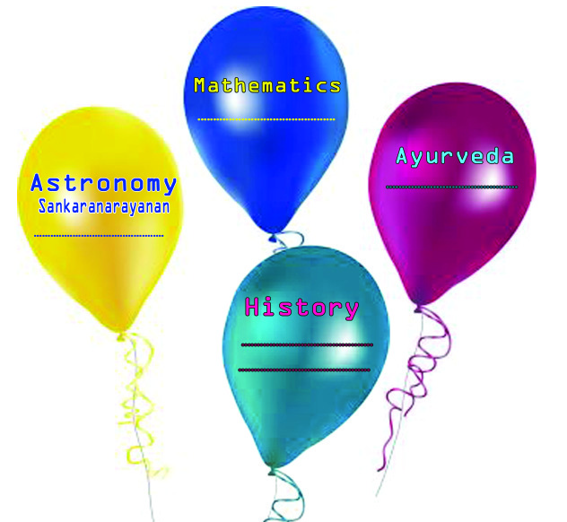

Standard VI
131
Medieval Kerala
Medieval Kerala
We have discussed the history of medieval India in the previous
chapters. Now let's discuss the social life in Kerala during the
period. Copper plates are the important source of history of
medieval Kerala between the 9th and the 18th century CE. The
picture of such a copper plate is given below.
Jewish copper plate
Page 35



Page 36


Social Science
132
Medieval Kerala
The copper plates with inscriptions
were used as document in ancient
times. The official documents given by
the chieftain's to temples and
tradesmen were mainly on such copper
plates. Therisappalli and Jewish
copper plates are examples. In some
of the plates the chieftain's reigning
period is also recorded.
Copper plates
Are you familiar with the script used in it?
The script used here is Vattezhuthu, an old
script. This copper plate is a record of the
rights sanctioned to Anchuvannam, a group
of traders, by Bhaskararavi, a medieval ruler
of Kerala based at Mahodayapuram .
Do you know where Mahodayapuram was
located? Let's have an inquiry into
Mahodayapuram, its rulers and the life of
the people.
Perumals
Kerala was a part of the ancient Tamilakam, ruled by the
Moovendars. We have discussed the ancient Tamilakam in the
previous class. A kingdom based at Mahodayapuram was
established by the 9th century CE. The rulers of the kingdom
were known as Perumals.
The present Kodungallur and the surrounding areas were known
as Mahodayapuram in those days. The Perumals were also
known as Cheras and Cheramans. Some of these rulers adopted
the title Kulashekara. Most regions in the present Kerala were
under the rule of the Perumals.
Read the map and identify the regions under the reign of
the Perumals'. List the nadus.
Page 37



Standard VI
133
Medieval Kerala
You can see that the reign of the Perumals extended from
Kolathunadu in the north to Venad in the south.
Let's examine the socio-economic features of these regions
during the reign of the Perumals.
Agriculture flourished in areas close to water resources.
Brahmins established their power in agricultural villages.
Temples developed as centres of power.
Page 38



Social Science
134
Medieval Kerala
The ownership of farm lands was vested with the Brahmins.
Aaladiyars were the people who toiled in the soil.
Besides farmers there were many other occupational groups in
villages. As agriculture became widespread, large areas of land
called Nadu developed. Those who established power over the
Nadus came to be known as Naduvazhis.
Naduvazhi Swaroopam
The reign of the Perumals came to an end by the 12th century.
Consequently the chieftains, who were the local rulers under
the Perumals, began to rule their respective Nadus
independently.
The region under the control of a chieftain was known as
Swaroopam. The joint family of the chieftain was also known
as Swaroopam. The eldest member of the family became the
ruler. There were disparities in wealth and military power among
the Nadus. The chieftains fought among themselves for power.
The major Swaroopams during the period were Trippappooru
Swaroopam in Venad, Perumpadappu Swaroopam in Kochi,
Nediyiruppu Swaroopam in Kozhikode, and Kolaswaroopam
in Chirakkal.
Complete the table.
Page 39


Standard VI
135
Medieval Kerala
They were the trade groups
that existed in Kerala from
the 9th to the 13th century
CE. Coastal towns of
Kerala were their major
commercial centres.
Anchuvannam
Manigramam
Trade
Internal and external trade made great progress in Kerala during
the medieval period.
Can you guess the goods that were exchanged from Kerala?
$Cardamom
$
Ginger
$
$
Goods from other lands also reached the markets of Kerala by
trade. Given below are a few of these goods.
Clay pots
Fishing net
Silk
Earlier, trade was carried out through the exchange of goods for
goods. Later, goods began to be exchanged for money. Trade
groups namely, Anchuvannam, Manigramam, etc. existed
during the period. Realizing the importance of trade,
the Perumals extended every help to the trade
groups. Tax on trade was an important source of
income during the period.
Markets
Maritime trade attained tremendous progress during the medieval
period. The demand for exported goods increased. This resulted
in the increase in the cultivation of such crops in rural areas.
Page 40





Social Science
136
Medieval Kerala
These goods were exchanged in the markets. The development
of markets helped in strengthening the local trade.
A new style of language
evolved during the medieval
period. It was a mixture of
Sanskrit and old Malayalam.
The newly developed style of
language came to be known
as Manipravalam. Several
literary works were written in
this style during the period.
Manipravalam
Ananthapuram, Kollam, Kochi, Kozhikode and Panthalayani were
the major markets of the period. The major ports were Kollam,
Kochi, Kozhikode, and Valapattanam.
Locate these ports on a map of Kerala.
Several goods reached the markets in Kerala through land and
sea trade. See the description of these goods in Unnuneeli
sandesam, a poem in manipravalam.
X´w I´n¬ Ib-dp-he ssI°-´n¬ a©-´n-sIm´w
sam´pw ap´n¬°-c-bp-a-cnbpw s]´nbpw ]´p-\qepw
BSpw- NmSpw IpS-bp-a-Sbpw ]™nbpw ap™n-thcpw
\qdpw -tNmdpw Npd-bp-a-dbpw Imcn-cnºpw Icnºpw
X´w I´n¬ Ib-dp-he ssI°-´n¬ a©-´n-sIm´w
sam´pw ap´n¬°-c-bp-a-cnbpw s]´nbpw ]´p-\qepw
BSpw- NmSpw IpS-bp-a-Sbpw ]™nbpw ap™n-thcpw
\qdpw -tNmdpw Npd-bp-a-dbpw Imcn-cnºpw Icnºpw
Page 41


Standard VI
137
Medieval Kerala
List the items available in the markets during the period.
Are these items still available in your area?
In the previous chapters we have discussed the travelogues that
described trade.
Let's now go through the description of the 15th century Calicut
port and trade by Ma Huan, a Chinese traveller, who visited Kerala
during the period.
"As a ship carrying goods from China arrives at the port,
Shabendar Koya (the King's representative) and a broker board
the ship and list the goods. A suitable day is opted to fix the
prices of goods. Priority was given to silk clothes. Once the
prices are fixed they take a vow that the prices of goods will
not be changed under any circumstances."
Thus the goods were exchanged for the price fixed by the Dallals
(brokers).
Prepare a note on the 15th century trade in
Kozhikode collecting details from Ma Huan's
description.
Language, Art, and Literature
We have read a few lines from Unnuneelisandesam. Do you
know when this form of language and literature evolved? Do
you think Malayalam have been in use since ancient times?
Why is Kerala known as Malayaladesam? Discuss.
It is generally believed that Malayalam has evolved from Tamil.
Sanskrit also has greatly influenced the development of
Malayalam. Vattezhuthu and Kolezhuthu were the scripts used
to write old Malayalam. Recall the Jewish copper plate written
in Vattezhuthu script.
Page 42




Social Science
138
Medieval Kerala
Arabi Malayalam is a
hybrid language that was
common
among
the
Muslims in Kerala. Arabic
script was used to write this
language.
Arabi Malayalam
Krishnagatha by Cherussery, Adhyatma Ramayanam
Kilippattu and Mahabharatham Kilippattu by Ezhuthachan,
Thullal literature of Kunchan Nambiar, etc. contributed to the
development of the Malayalam language.
The Mohiyudheen Mala written in Arabi Malayalam by Quazi
Muhammed in the 17th century and Puthanpana written by Arnos
Pathiri in the 18th century enriched the language. Besides these,
the Vadakkanpattu, Tekkanpattu, and Thozhilpatttu also
contributed to the popularity of Malayalam.
Collect verses from different types of folk songs
mentioned above and present in the class.
Observe the above picture. Which art forms are depicted
in it?
These are a few art forms that developed in medieval Kerala.
Dance and music flourished in temples during the period.
Koothu, Koodiyattom, and Kathakali were staged in the
Koothambalam attached to temples. Hence these art forms
Page 43


Standard VI
139
Medieval Kerala
• Kanthaloor Salai
• Vizhinjam Salai
• Parthivasekharapuram
Salai
Salais
came to be known as temple arts. The ritual art forms like
Theyyam, Thira, and Kalampattu were performed in Kavus
(sacred groves) and other places of worship. They were more
popular than the temple arts.
What is the stage where the temple arts are performed
called?
Why are the ritual arts considered more popular?
Apart from these, several other art forms were performed in
connection with the rituals and celebrations of different
religious
communities.
Oppana,
Margamkali,
Chavittunadakam, etc. are a few examples.
Knowledge
Medieval Kerala had gained much progress in the field of
knowledge. Sankaranarayanan was a famous astronomer during
the reign of the Perumals. He has authored
Sankaranarayaneeyam, a book on Astronomy. The
contributions of Samgrama Madhavan to Mathematics gained
worldwide acclaim. Ashtanga hridayam on Ayurveda was also
written during this period. The two important literary works on
history, Mooshaka Vamsam and Tuhafat Ul
Mujahideen were also written during the medieval
period.
The centres of education during the period were
attached to temples and were known as Salais. Those
attached to Buddhist centres were known as Palli.
Include the contributions of medieval Kerala in the
field of knowledge to complete the diagram .
Page 44



Social Science
140
Medieval Kerala
A different socio-economic system developed in Kerala by the
18th century. Language, art, literature, and knowledge gained a
unique identity during the period.
Copper plates are a major source of information on
medieval Kerala.
Kerala developed as a distinct administrative territory
during the reign of the Perumals.
Agriculture and trade formed the base of economy during
the Perumal reign.
Chieftains gained power with the decline of the Perumals.
The areas ruled by the chieftains were known as
Swaroopams.
Page 45


Standard VI
141
Medieval Kerala
Domestic and foreign trade flourished leading to the
development of new markets and ports.
Malayalam language got enriched.
Literature, art, and knowledge prospered.
The Learner
recognises and explains that the copper plates are a major
source of information on medieval Kerala.
identifies and presents that Kerala under the Perumal rule
was a distinct administrative territory.
analyses the development of domestic and maritime trade.
explains the development attained in Malayalam language,
literature, and knowledge.
recognises the art forms of Kerala and develops an attitude
to appreciate them.
Prepare a note on the social life during the period of the
Perumals.
The development of villages in Kerala is closely connected
to the spread of agriculture. Describe.
Prepare a note on the domestic and maritime trade in
medieval Kerala.
Page 46


Social Science
142
Medieval Kerala
List the goods that were exported from Kerala and those
imported during the medieval period.
Prepare a note on the development of Malayalam language
and literature during the medieval period.
Write a note on the achievements of Kerala in the field of
knowledge in the medieval period.
Collect the pictures of art forms of Kerala and prepare an
album.
Completely
Partially
Need
improvement
Have become aware that Kerala
developed into a distinct administrative
territory during the reign of the
Perumals.
Can recognize the progress of agriculture
and trade in medieval Kerala.
Can evaluate the ascent of chieftains to
power with the decline of the Perumals.
Can analyse the development of markets
and ports during the medieval period.
Can explain the progress attained in the
fields of literature, art, and language
during the period.
Self assessment
Self assessment
Self assessment
Self assessment
Self assessment